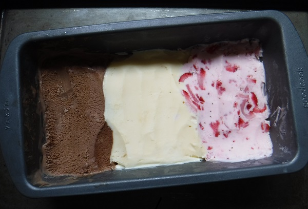
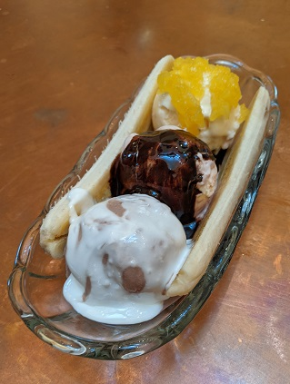

Daniel Streeter
Ice Cream Facts

For the sake of texture, when making frozen desserts, it is considered best-practice to chill liquid mixtures prior to freezing.
Recent Cooking
- Key Lime Pie
- Multigrain Bread
- Sicilian-style Gelato
- Peanut Butter Cookies x Carmelitas
